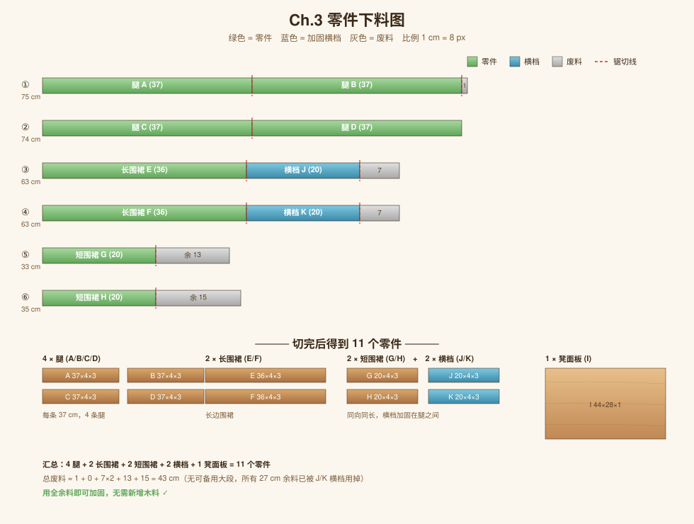

Ch.3 零件下料
把 6 根木条裁成 10 个零件，加上 1 块板，共 11 个零件

图 3.1 · 绿色 = 保留 / 灰色 = 废料 / 红虚线 = 锯切位置
切割方案
| 原料 | 切法 | 得到的零件 | 废料 |
|---|---|---|---|
| ① 75 cm | 37 + 37 | 腿 A、腿 B | 1 cm |
| ② 74 cm | 37 + 37 | 腿 C、腿 D | 0 cm |
| ③ 63 cm | 36 + 20 | 长围裙 E + 横档 J | 7 cm |
| ④ 63 cm | 36 + 20 | 长围裙 F + 横档 K | 7 cm |
| ⑤ 33 cm | 20 + 余 | 短围裙 G | 13 cm |
| ⑥ 35 cm | 20 + 余 | 短围裙 H | 15 cm |
长度计算
- 长围裙：板长 44 − 两腿宽 (4 + 4) =
36 cm - 短围裙：板宽 28 − 两腿宽 (4 + 4) =
20 cm - 侧横档：与短围裙同方向、同长度 =
20 cm，装在两条腿之间 - 腿：总高 38 − 凳面板 1 =
37 cm（围裙在腿内侧，不占高度）
最终零件清单
| 编号 | 部件 | 数量 | 尺寸（cm） |
|---|---|---|---|
| A–D | 腿 | 4 | 37 × 4 × 3 |
| E、F | 长围裙 | 2 | 36 × 4 × 3 |
| G、H | 短围裙 | 2 | 20 × 4 × 3 |
| J、K | 侧横档 | 2 | 20 × 4 × 3 |
| I | 凳面板 | 1 | 44 × 28 × 1 |
⚠️ 重要：4 条腿切完后必须叠在一起，用砂纸把端面砂到完全等长，否则板凳会晃。这一步比任何精确测量都更可靠。
下料技巧
- 用角尺画 90° 直线再下锯，先画线再切
- 每段留 1 mm 余量给砂磨找平
- 切完后立刻在每个零件上用铅笔标号（A/B/C…），后面组装不会乱